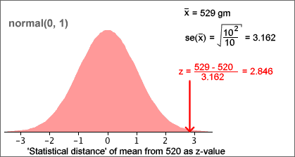

Test statistic and p-value
The statistical distance of an estimate to a hypothesised value of the underlying parameter is

If the null hypothesis holds, z has approximately a standard normal distribution and it can be used as a test statistic for tests about the parameter. The p-value can be determined from the tail areas of this standard normal distribution.

For a two-tailed test, the p-value is the red tail area and can be looked up using either normal tables or in Excel.
Example
Is a sample mean weight of 10 cornflake packets of 529 gm consistent with a packing machine that is set to give normally distributed weights with µ = 520 gm and σ = 10 gm?
H0 : µ = 520
HA : µ ≠ 520
The diagram below shows how the 'statistical distance' of the sample proportion from 520 is calculated.

The p-value for the test is the probability that the standardised distance is at least as far from zero as 2.846 and can be found from the standard normal distribution to be 0.0044.
We again conclude that there is strong evidence that the population mean, µ, is not 520.